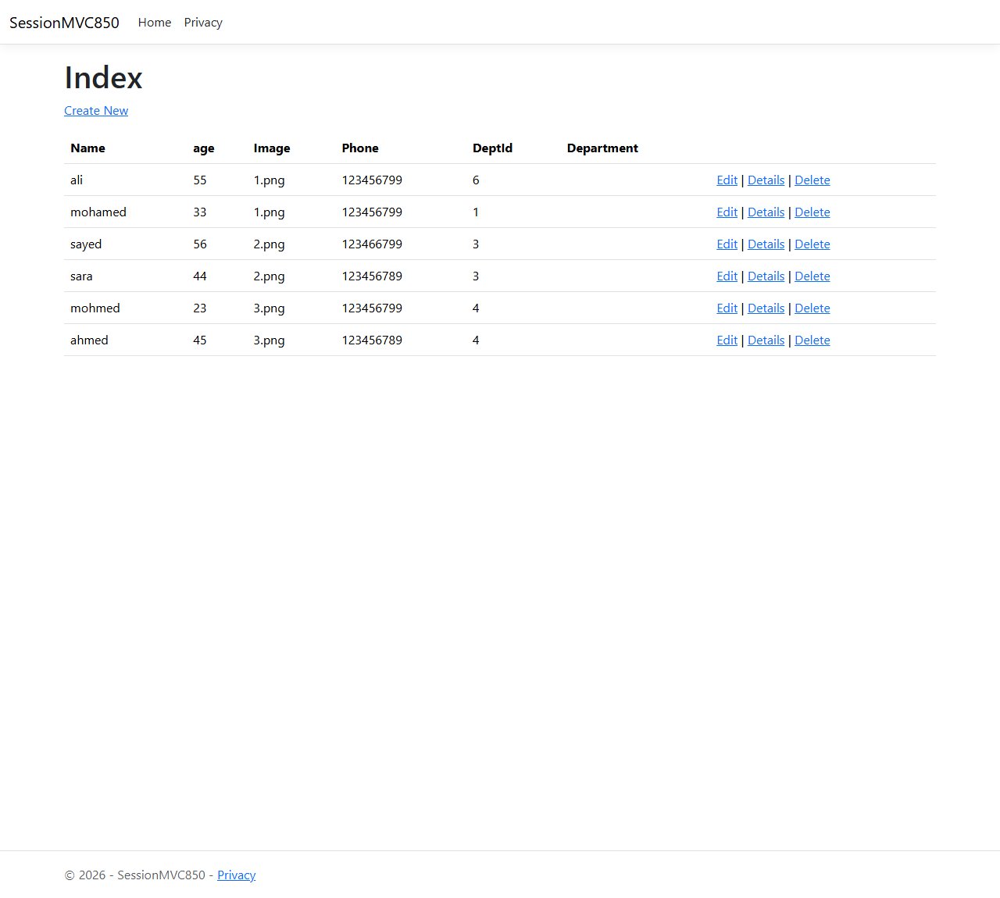
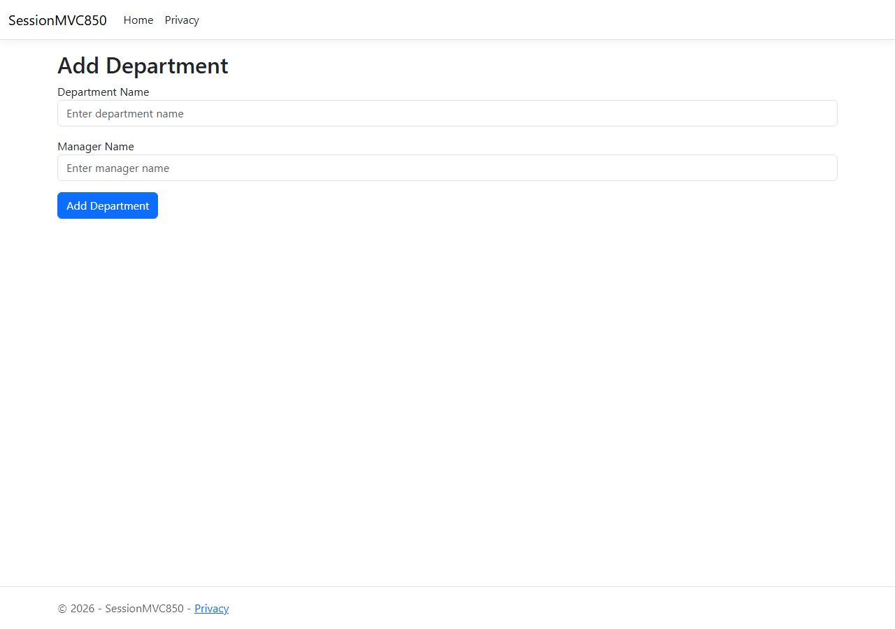

How to Edit an Employee — Step by Step
SessionMVC850 · ASP.NET Core MVC · English guide
Session850
is available, and at least one employee exists in the Employees table.
The Steps
-
Run the application
Open the project in Visual Studio and press
F5, or run this in a terminal inside the project folder:dotnet runThe application starts at
http://localhost:5090. -
Open the employees list
In the browser, go to:
http://localhost:5090/EmployeeThis is the Employee Index page. It shows all employees in a table.
-
Click the Edit link
Find the employee you want to change and click Edit in that row. The browser opens:
http://localhost:5090/Employee/Edit/{id}For example, employee number 3 opens
/Employee/Edit/3.
The employees list — click Edit in the row you want to change. -
Check the pre-filled data
The edit form already contains the employee's current values. The department dropdown is automatically set to the employee's current department.
-
Change the fields you need
Field What to do Name Type the new employee name. Age Type the new age (number only). Image Type the image path or file name (optional). Phone Type the new phone number. Department Choose the department from the dropdown list. Important The Name must not be empty. If it is empty, the form is shown again and nothing is saved.
The Edit Employee form with all fields, including the Department dropdown. -
Click Save Changes
The form is submitted to
POST /Employee/SaveEdit. The employee record is updated in the database, then you are redirected back to the employees list. -
Verify the result
The employees list appears again. Find the employee and confirm that the new values are displayed in the table.
Success If you see the updated values in the list, the edit was saved successfully. -
Optional: Cancel
Click Cancel to return to the list without saving any changes.
How the Department Dropdown Is Filled — Step by Step
On the edit page, the Department field is a dropdown
(<select>). Its items come from the Departments table in the
database. Here is exactly how it is built:
-
Controller: load all departments
In
EmployeeController.Edit, after loading the employee, get every department and store the list inViewBag.Departments:public IActionResult Edit(int id) { var employee = EmployeeBL.GetById(id); if (employee == null) { return NotFound(); } ViewBag.Departments = DepartmentBL.GetAll(); return View(employee); } -
Service: read the departments from the database
DepartmentBL.GetAll()asks Entity Framework for all rows in theDepartmentstable:public List<Department> GetAll() { return CompanyContext.Departments.ToList(); } -
View: create the dropdown control
In
Views/Employee/Edit.cshtmlthe dropdown is a normal HTML<select>. Itsnamemust beDeptIdso the selected value binds toEmployee.DeptId:<div class="mb-3"> <label for="DeptId">Department</label> <select id="DeptId" name="DeptId" class="form-control"> ... </select> </div> -
View: generate one option per department
Loop over the list in
ViewBag.Departmentsand print one<option>for each department. The option value is the departmentIdand the visible text is itsName:@foreach (var department in (IEnumerable<Department>)ViewBag.Departments) { <option value="@department.Id">@department.Name</option> } -
View: preselect the employee's current department
Compare each department id with
Model.DeptId. When they match, add theselectedattribute so that department appears chosen when the page opens:@foreach (var department in (IEnumerable<Department>)ViewBag.Departments) { if (department.Id == Model.DeptId) { <option value="@department.Id" selected>@department.Name</option> } else { <option value="@department.Id">@department.Name</option> } } -
Submit: send the chosen department id to the server
When the form is posted to
/Employee/SaveEdit, the browser sends the selected option'svalueasDeptId. MVC model binding puts it intoemployee.DeptId. -
Save: store the new department
EmployeeBL.Updatecopies the value from the form and saves it to the employee row:existing.DeptId = employee.DeptId; CompanyContext.SaveChanges();
Departments table. Add a department from the
Department pages first, then reload the edit page.

SaveEdit loads the departments again before returning the form, so the
dropdown keeps working when a field is invalid:
ViewBag.Departments = DepartmentBL.GetAll();
return View("Edit", employee);What Happens Behind the Scenes
- The browser sends
GET /Employee/Edit/{id}. EmployeeController.Editloads the employee withEmployeeBL.GetByIdand puts the departments inViewBag.Departments.Views/Employee/Edit.cshtmlrenders the form with the current values.- When you click Save Changes, the browser sends
POST /Employee/SaveEdit. EmployeeController.SaveEditcallsEmployeeBL.Update, which copies the new values to the database row and callsSaveChanges().- The controller returns
RedirectToAction("Index"), so the list is shown again.
Project Files Involved
| File | Purpose |
|---|---|
Controllers/EmployeeController.cs |
Contains the Edit (GET) and SaveEdit (POST) actions. |
Services/EmployeeBL.cs |
Contains GetById (load one employee) and Update (save changes). |
Views/Employee/Edit.cshtml |
The edit form with the fields and the department dropdown. |
Views/Employee/Index.cshtml |
The list page that contains the Edit link. |
Troubleshooting
| Problem | Solution |
|---|---|
| 404 — page not found | Stop the app, rebuild it, and run it again. Make sure the Edit action
exists in EmployeeController. |
| The department dropdown is empty | Add at least one department first from the Department pages. |
| NullReferenceException on the employees list | The list action must pass the employees to the view:
return View(EmployeeBL.GetAll()); |
| Changes are not saved | Check that Name is not empty and that
SaveChanges() is called inside EmployeeBL.Update. |